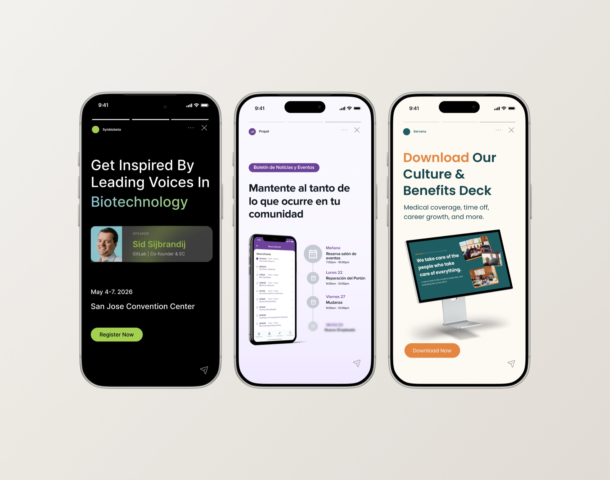

Super Early Bird campaign creatives
A look at how I design social content for very different brands: B2B fintech, a science conference, a family-building agency, and a PropTech platform. Different audiences, same process.

Four brands with nothing in common. Each one needed to stand out in the feed and get its message across in seconds.
One repeatable process: start from the brand, use templates, and match the tone to each audience.
Consistent content produced in batches for every brand, plus a new color direction one client adopted for the whole account.
The same steps behind every account, no matter the industry.
This keeps quality high while making it possible to deliver a lot of content on a tight schedule.
Creatives for the Super Early Bird ticket campaign.
These were paid ads with one job: sell tickets before the price goes up. So the offer and deadline come first, every ad has a clear call to action, and one clean design adapts to every ad size.
Instagram posts for a building management software.


Building management software is hard to show in a single post. I mixed real product screens with everyday moments, like booking the pool or checking expenses, so owners and managers could see how the app fits into their day. A purple and green system keeps the whole feed consistent.
Un software de administración de edificios es difícil de mostrar en un solo post. Combiné pantallas reales del producto con momentos del día a día, como reservar la piscina o revisar los gastos, para que propietarios y administradores vieran cómo la app encaja en su rutina. Un sistema de morado y verde mantiene todo el feed consistente.
Educational content for a loan servicing platform.


Loan servicing is a technical topic. The carousels needed to explain it in a way a busy professional could follow while scrolling.
Created as part of the team at ATAK Interactive, a marketing agency in Los Angeles.


Surrogacy is a sensitive topic. The existing collateral used a muted palette that made the subject feel heavy.
These four projects look very different on the surface, but they come from the same way of thinking.
Each one starts with the brand and the audience, then uses a simple system to produce content that is consistent and easy to understand.
Sometimes that means explaining a technical topic in a few slides. Sometimes it means changing how a sensitive subject feels. And sometimes it means giving a small team the tools to do it themselves.
Good social design is not only about one beautiful post. It is about a system that keeps working, post after post.